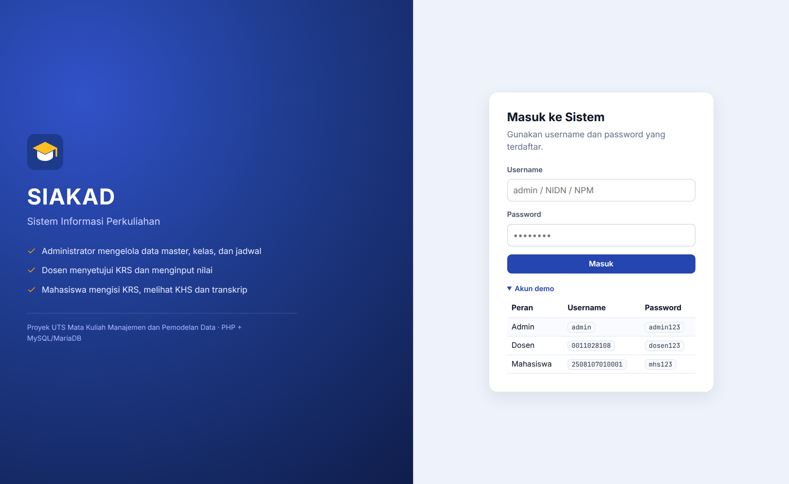
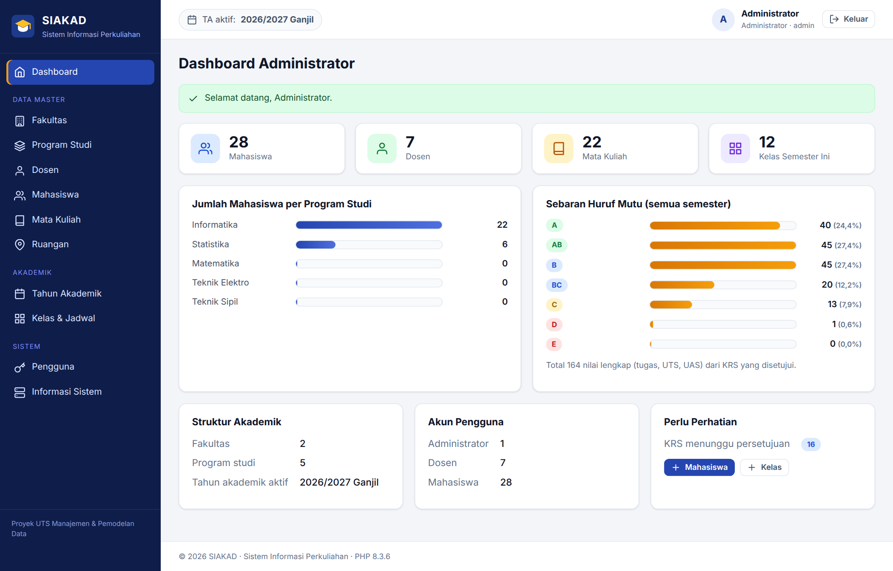
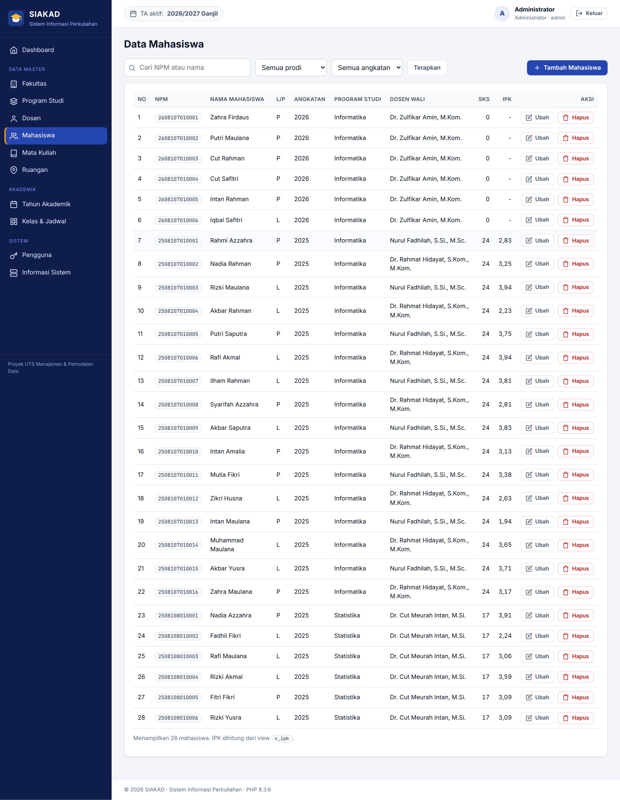
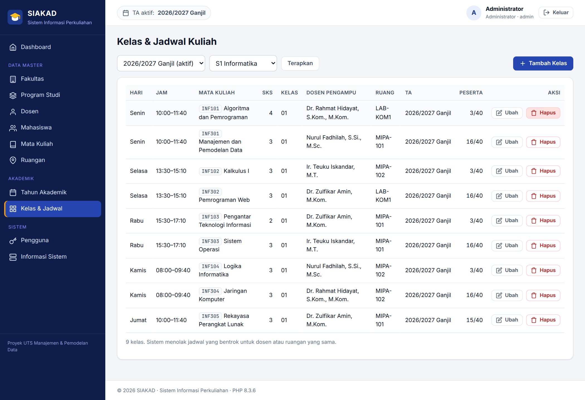
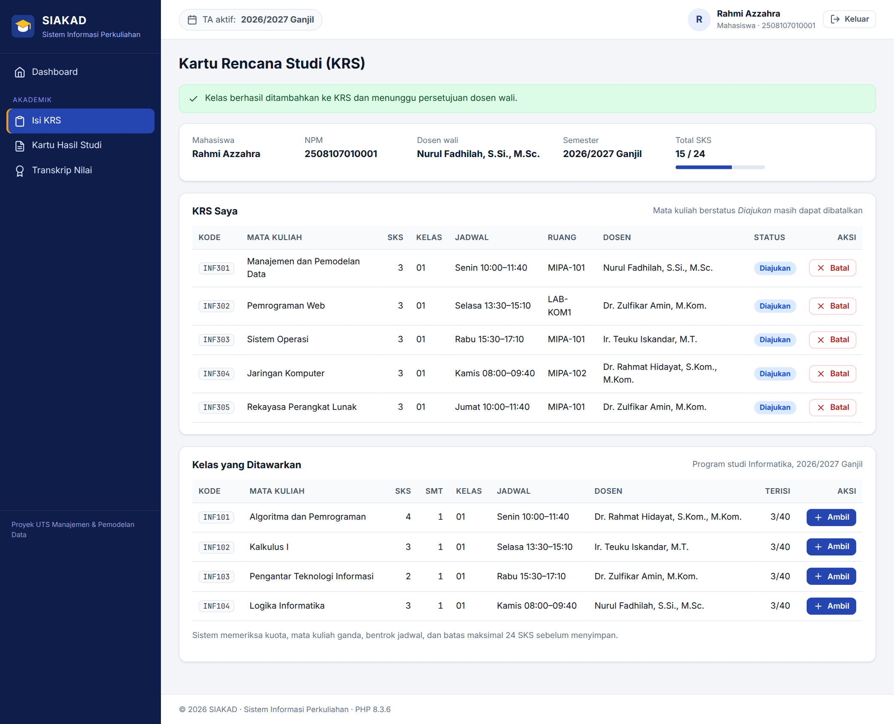
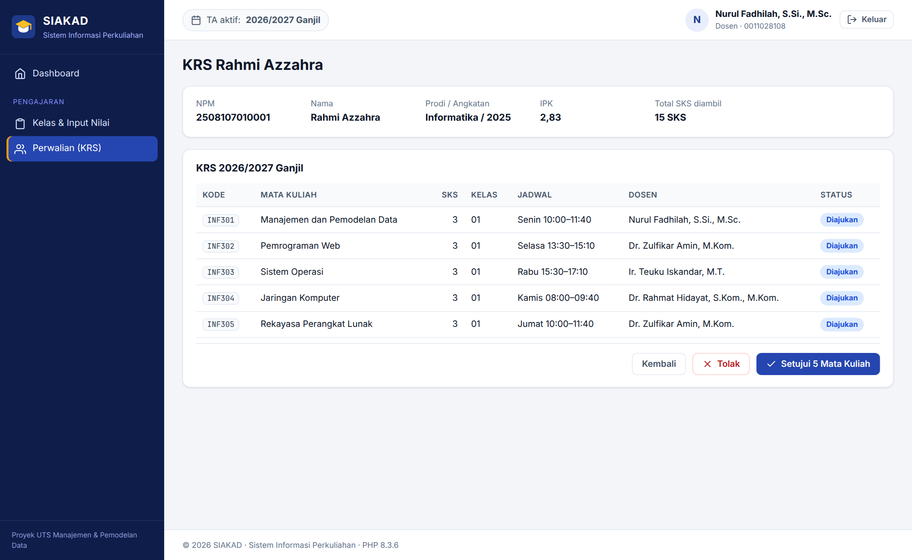
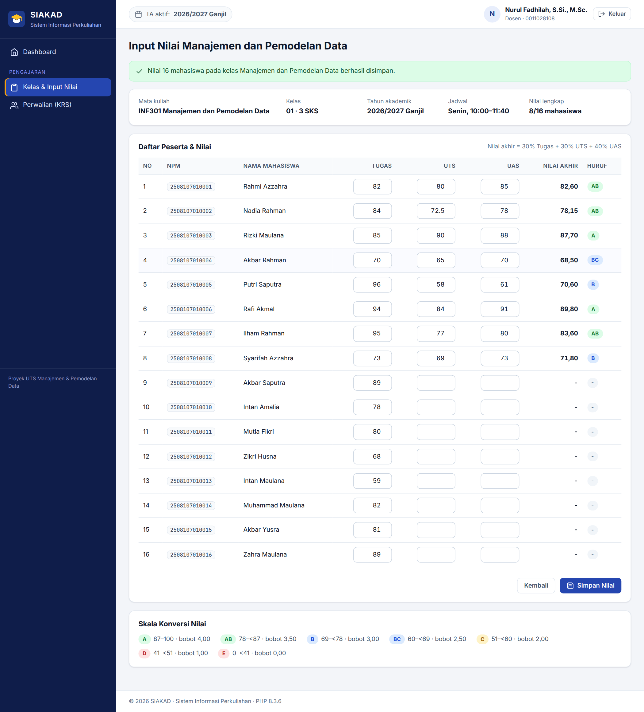
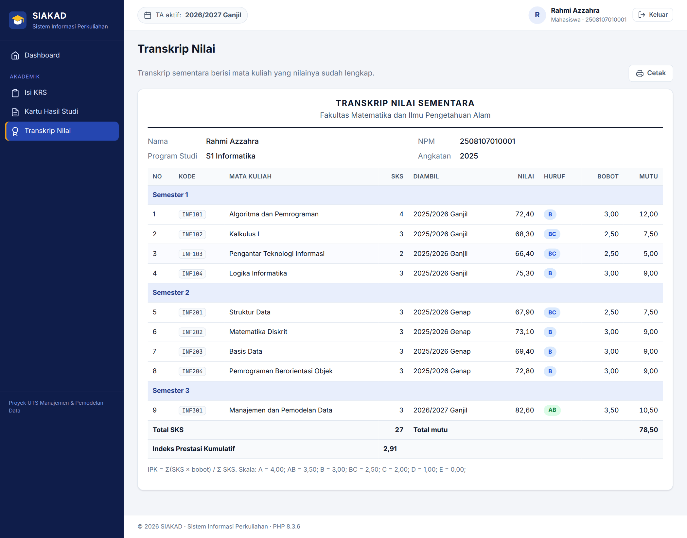
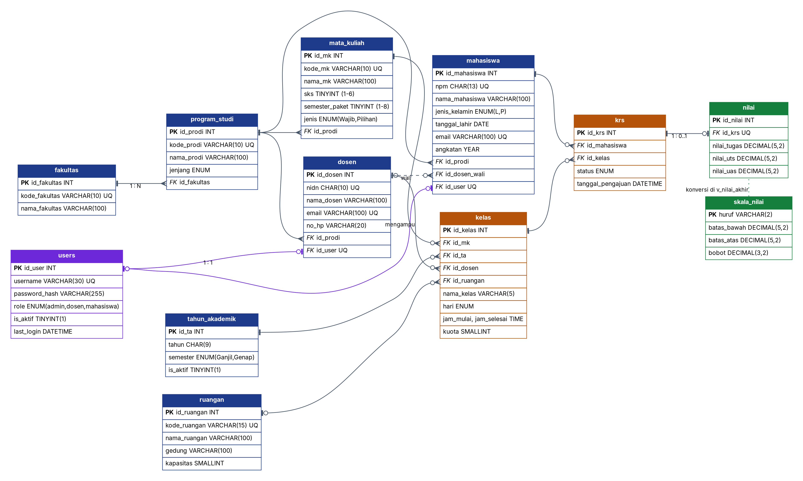

Akun demo
| Peran | Username | Password |
|---|---|---|
| Administrator | admin | admin123 |
| Dosen (dosen wali dan pengampu) | 0011028108 | dosen123 |
| Mahasiswa | 2508107010001 | mhs123 |
Seluruh nama, NIDN, NPM, dan nilai adalah data contoh fiktif.
Fitur
Administrator
- CRUD fakultas, prodi, dosen, mahasiswa, mata kuliah, ruangan
- Kelas dan jadwal dengan deteksi bentrok
- Manajemen akun dan dashboard statistik
Dosen
- Persetujuan KRS mahasiswa bimbingan
- Input nilai tugas, UTS, UAS dengan pratinjau nilai akhir
- Jadwal mengajar
Mahasiswa
- Pengisian KRS (kuota, bentrok, maksimal 24 SKS)
- KHS per semester dengan IPS
- Transkrip dengan IPK
Cara menjalankan
- Sekali klik dari GitHub: tombol Jalankan aplikasi di atas membuat server PHP dan MariaDB di GitHub Codespaces, mengimpor basis data otomatis, lalu membuka aplikasinya.
- MacBook:
brew install php mariadb,brew services start mariadb, impordatabase/schema.sqldandatabase/seed.sql, lalu jalankanphp -S localhost:8000 tools/router.phpdan bukahttp://localhost:8000. - Windows (XAMPP): salin folder ke
htdocs/siakad, impor SQL lewat phpMyAdmin, bukahttp://localhost/siakad/.
Panduan lengkap ada di README.
Tangkapan layar








Basis data
Basis data db_siakad terdiri atas 12 tabel InnoDB dalam bentuk normal ketiga (3NF) dan 3 view untuk nilai akhir, IPS, dan IPK.
